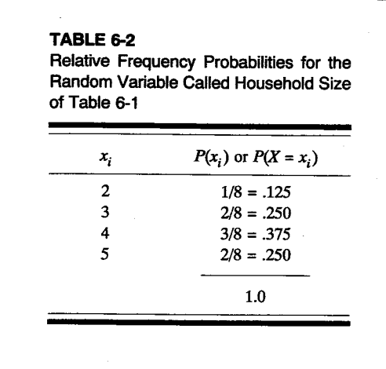
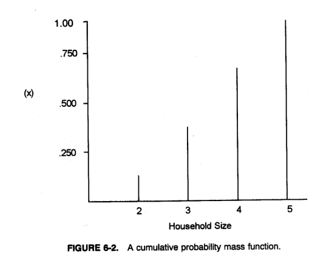
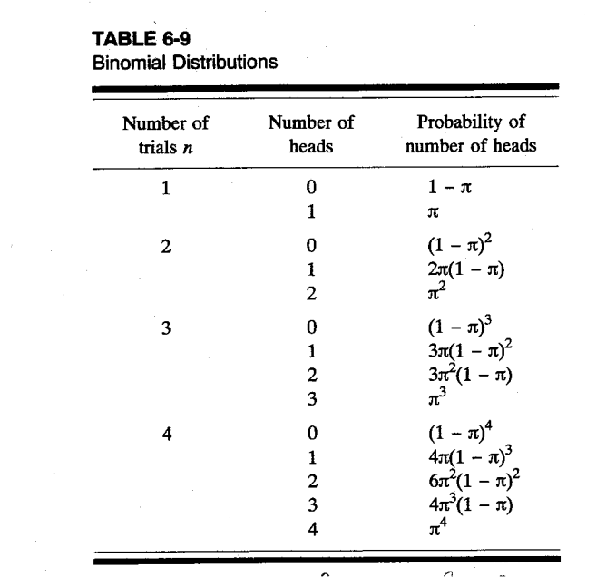
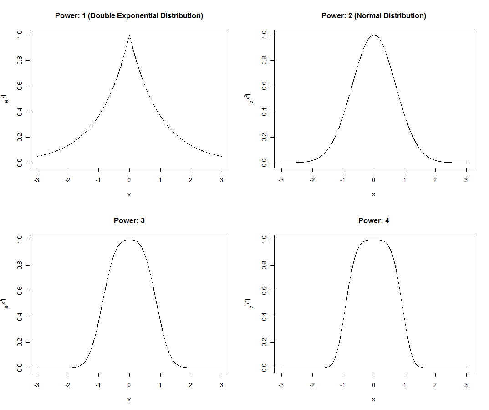
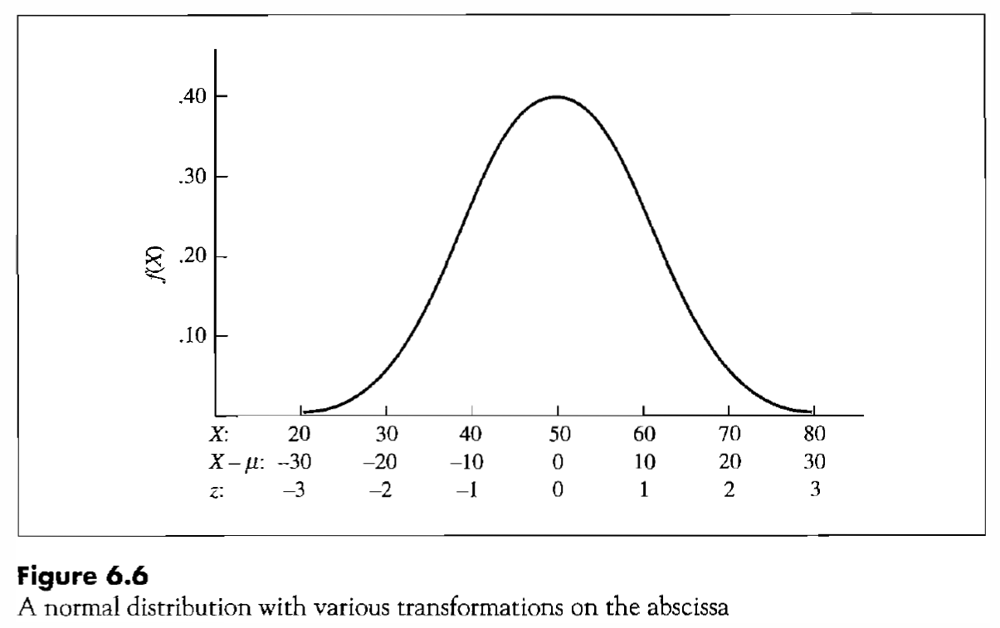
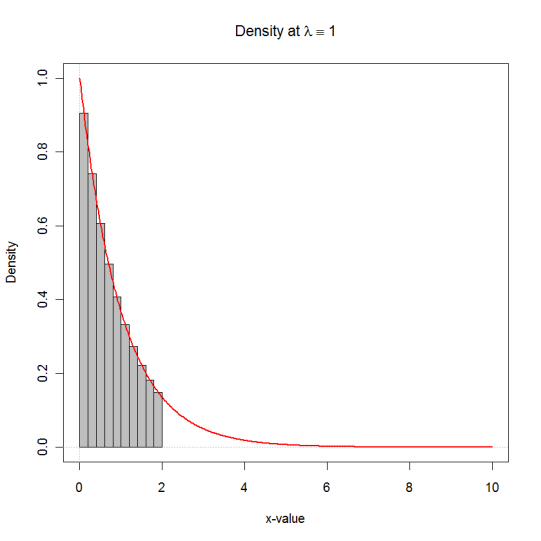
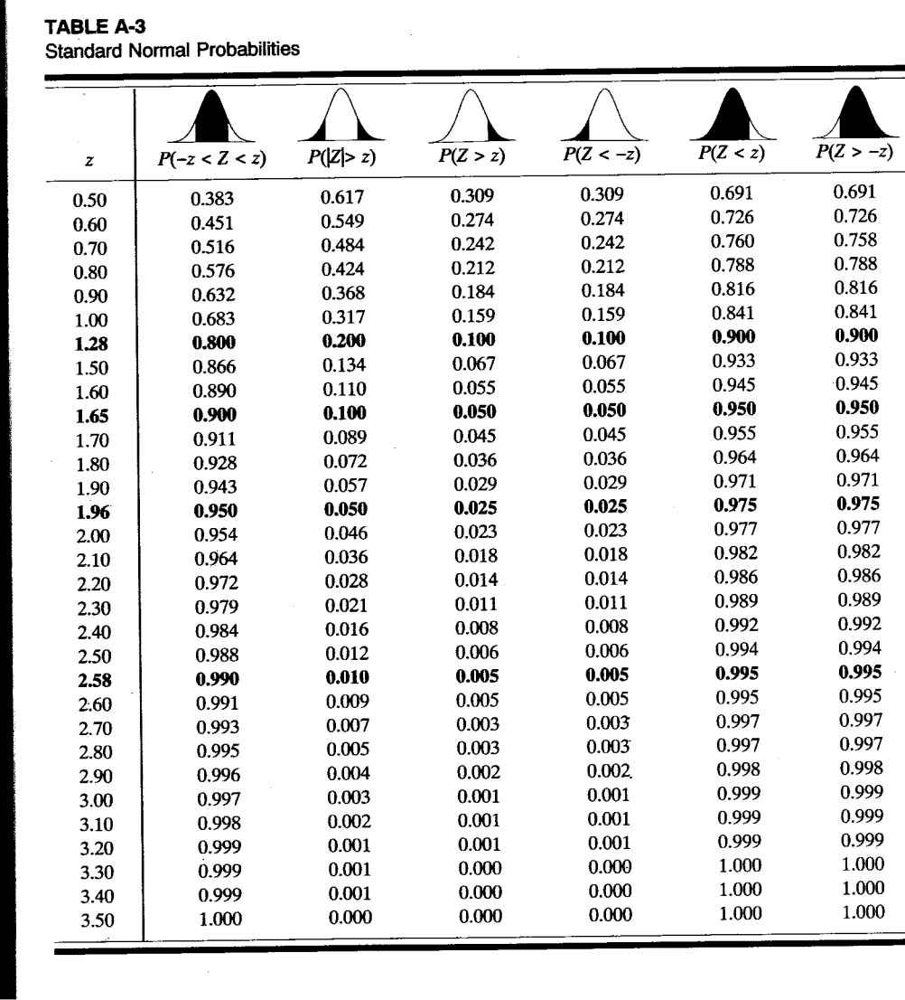
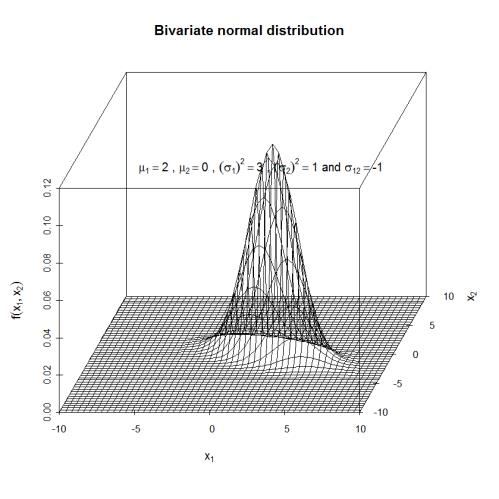
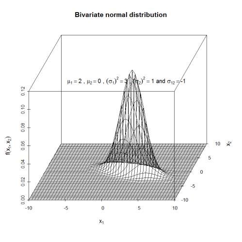

Chapter 05 (Part B): Probabilities and Random Variables
Probability B: Univariate Distributions
1 Probability B: Univariate Distributions
1.1 Probability Density and Distribution for Discrete Random Variables
Definition: Probability Distribution or Function (p 211). A table, graph, or mathematical function that describes all potential outcomes \(x\) of the random variable \(X\) from its underlying population and their corresponding probabilities.
Notation: \(\Pr(X = x)\) where \(x\) is an outcome of random variable \(X\).
Recall: these probabilities following Kolmogorov’s axioms.
- [a] \(0 \leq \Pr(X = x) \leq 1\)
- [b] \(\Pr(a \leq X \leq b) = \sum_{x \in [a,b]} \Pr(X = x)\)
- [c] \(\Pr\left(\sum_{x \in \mathcal{X}} \Pr(X = x)\right) = 1\) because the set of all elementary outcomes are mutually exclusive and exhaustively cover the sample space \(\mathcal{X}\) (all possible outcomes) of the random variable \(X\).
1.1.1 Representation as Graph or Table


1.1.2 Cumulative Probability Function
If the individual data values \(x_i\) are sorted ascending, i.e., \(x_1 < x_2 < \ldots < x_n\), then we can express the cumulative probability function, denoted by a capital \(F()\), as:
\[F(x_i) = \sum_{X \leq x_i} \Pr(X = x_i) = \Pr(X = x_1) + \Pr(X = x_2) + \cdots + \Pr(X = x_i)\]
Note: we always can retrieve the individual probabilities from the cumulative probability function:
\[\Pr(X = x_1) = F(x_1)\] \[\Pr(X = x_2) = F(x_2) - F(x_1)\] \[\vdots\] \[\Pr(X = x_n) = F(x_n) - F(x_{n-1})\]


1.2 Expectation and Variance of Discrete Random Variables
The expected value and the variance are population counterparts to the sample statistics of the estimated mean and estimated variance.
Note that the summation must proceed over the complete range of possible data values of \(X\).
1.2.1 Definition: Expected Value
For a discrete random variable \(X\) with values \(x_1, x_2, \ldots, x_k\), its expected value is:
\[E(X) = \sum_{i=1}^{k} x_i \cdot \Pr(X = x_i)\]
1.2.2 Definition: Variance
For a discrete random variable \(X\) with values \(x_1, x_2, \ldots, x_k\), its variance is:
\[Var(X) = \sum_{i=1}^{k} \left[x_i - E(X)\right]^2 \cdot \Pr(X = x_i)\]
\[= \sum_{i=1}^{k} x_i^2 \cdot \Pr(X = x_i) - \left[E(X)\right]^2\]
- In both expressions the constant observation weight factor \(\frac{1}{n}\) \(\forall i\), that has been used when calculating the sample means and variances, has been replaced by the probability \(\Pr(X = x_i)\)
1.3 Probability Density and Distribution for Continuous Random Variables
Since we are dealing with an infinite number of representations of a random variable in its support along the real domain \([a, b]\) with the possible bounds \(-\infty \leq a\) and \(b \leq \infty\), it follows that:
The probability of an individual representation \(X = x_i\) becomes zero, that is, \(\Pr(X = x_i) = 0\).
Otherwise, the probability over all representations would sum to a value larger than one.
The individual probabilities are replaced by the continuous probability density function \(f(x)\) with:
\[f(x) = \begin{cases} > 0 & \text{for } x \in [a, b] \\ 0 & \text{for } x \notin [a, b] \end{cases}\]
and the area under the density function has to integrate to one: \(\int_a^b f(x) \cdot dx = 1\).
- Probabilities of subsets \([c, d]\) with \(a \leq c < d \leq b\) can still be expressed by integrals:
\[\Pr(c \leq X \leq d) = \int_c^d f(x) \cdot dx\]
Note: An integral is the area underneath the function \(f(x)\) within the interval from \(a\) to \(b\).
1.3.1 Density Function Can Exceed One
Note: the density function at a given values \(X = x\) can be larger than one, i.e., \(f(x) > 1\).
Example: \(X \sim U(0.0, 0.5)\) (read: the random variable \(X\) is distributed according to a uniform distribution with a support starting at 0 and ending at 0.5).
Its density function is: \[f(x) = \begin{cases} 2 & x \in [0.0, 0.5] \\ 0 & \text{otherwise} \end{cases} \text{ with } \int_a^b f(x) \cdot dx = 1\]
1.3.2 Cumulative Distribution Function
Its cumulative distribution function becomes: \[F(x) = \Pr(X \leq x) = \int_{-\infty}^{x} f(x) \cdot dx\]
2 Specific Discrete Probability Distributions
Each distribution has a specific underlying model that has generated the probabilities of the events.
2.1 Uniform Distribution (skipped)
For \(k\) representations numbered \(x \in \{1, 2, \ldots, k\}\) with equal probabilities, the probability function becomes:
\[\Pr(X = x \mid k) = \frac{1}{k} \text{ with } x \in \{1, 2, \ldots, k\}\]
2.1.1 Expectation
\[E(X) = \sum_{x=1}^{k} x \cdot \Pr(X = x \mid k) = \sum_{x=1}^{k} x \cdot \frac{1}{k}\]
\[= \frac{1}{k} \cdot \left[\frac{k \cdot (k+1)}{2}\right] = \frac{k+1}{2}\]
2.1.2 Variance
\[Var(X) = \frac{k^2 - 1}{12}\]
2.2 Binomial Distribution
2.2.1 Underlying Assumptions of the Binomial Distribution Model
[a] There are \(n\) independent trials of an experiment, that is, the outcome of previous trials will not influence the outcome of current or future trials (i.e., sampling with replacement).
[b] Only binary outcomes (e.g., success/failure, head/tail, male/female, 0/1, etc.) are possible at each trial.
[c] The probabilities \(\pi\) for successes and the complement probability \(1 - \pi\) for failures remain constant for all trials.
[d] The random variable \(S\) is the total number of “successes” (sum of the individual successes) after \(n\) trials have been completed, that is, \(0 \leq S \leq n\).
2.2.2 Bernoulli Distribution
Each individual trial follows a Bernoulli distribution (just one trial, i.e., \(n = 1\)):
\[\Pr(S = s) = \pi^s \cdot (1 - \pi)^{n-s} \text{ with } s = \begin{cases} 1 & \text{for either a success} \\ 0 & \text{or for a failure} \end{cases}\]
This reduces to \(\Pr(S = 0) = 1 \cdot (1 - \pi)^1\) and \(\Pr(S = 1) = \pi^1 \cdot 1\) because \(x^0 = 1\).
2.2.3 Example: Two Independent Trials
The joint probability of \(\{S_1 = 0 \cap S_2 = 1\}\), that is one success \(S = 1\) in two independent trails (allows multiplication of probabilities) and \(n = 2\), becomes:
\[\Pr(S_1 = 0 \cap S_2 = 1) = \left[\underbrace{\pi^0}_{=1} \cdot \underbrace{(1-\pi)^{1-0}}_{=1-\pi}\right] \cdot \left[\underbrace{\pi^1}_{=\pi} \cdot \underbrace{(1-\pi)^{1-1}}_{=1}\right]\]
This probability is identical for the individual event \(\{S_1 = 1 \cap S_2 = 0\}\), therefore, order does not matter.
2.2.4 Mutually Exclusive Events
The events \(\{S_1 = 0 \cap S_2 = 1\}\) and \(\{S_1 = 1 \cap S_2 = 0\}\) are both mutually exclusive (thus their probabilities can be summed up), thus:
\[\Pr(X = 1 \mid n = 2, \pi) = \Pr(S_1 = 0 \cap S_2 = 1) + \Pr(S_1 = 1 \cap S_2 = 0)\] \[= 2 \cdot \pi \cdot (1 - \pi)\]
2.2.5 General Binomial Formula
The general equation for the binomial distribution takes the sum of successes from experiments with a different sequence of successes into account:
\[\Pr(X = x \mid n, \pi) = \frac{n!}{x! \cdot (n-x)!} \cdot \pi^x \cdot (1 - \pi)^{n-x}\]
2.2.6 Example: Coin Toss Outcomes


2.2.7 Expectation and Variance of Binomial Distribution
- Expectation: \(E(X) = n \cdot \pi\)
- Variance: \(Var(X) = n \cdot \pi \cdot (1 - \pi)\)
2.2.8 Example: Binomial Distribution
Examples of the binomial distribution can be generated with the R script BinomPoisson.r:
\(X \sim Binomial(\pi = 0.3, n = 6)\)
| Count | Pr(Count) |
|---|---|
| 0 | 0.117649 |
| 1 | 0.302526 |
| 2 | 0.324135 |
| 3 | 0.185220 |
| 4 | 0.059535 |
| 5 | 0.010206 |
| 6 | 0.000729 |

Examples of Binominal Distribution Functions: \(X \sim Binomial(\pi = 0.3, n = 60)\)

Note that for large \(n\), the discrete density almost looks like being almost continuous normal distributed.
2.3 The Poisson Distribution
- Important probability model for counting and queuing processes
2.3.1 Underlying Assumptions
[a] The total number of events in two mutually exclusive intervals is independent
[b] The probability of just one event in a small interval is small and proportional to the length of the interval, i.e., the event is rare
[c] The probability of two or more events in a small interval is near zero
2.3.2 Density Function
\[\Pr(X = x \mid \lambda) = \frac{\exp(-\lambda) \cdot \lambda^x}{x!} \text{ with } x \in \{0, 1, 2, \ldots\}\]
2.3.3 Expectation and Variance
The expectation and variance are equal: \[E(X) = Var(X) = \lambda\]
2.3.4 Derivation from Binomial Distribution
The Poisson distribution can be derived from the Binomial Distribution (see BBR, pp 228-230 and the script BinomApproachPoisson.r) as the number of trials moves to infinity, i.e., \(n \to \infty\), under the assumptions:
[a] The number of intervals \(n\) per unit \(U\) increases → the intervals become shorter \(U/n\).
[b] However, the probability of one event proportionally decreases \(\Pr(X = 1) \sim U/n\).
Note however, the expectation remains fixed, i.e., \(E(X) = n \cdot \pi = \text{constant}\).
Examples of Poisson Distributions for \(\lambda \in \{0.5, 1.0, 5.0\}\)

2.4 Other Frequently Encountered Discrete Distributions (skipped)
2.4.1 Geometric Distribution
Number of Bernoulli trials before the first success occurs.
2.4.2 Negative Binomial Distribution
Number of Bernoulli trials is \(x + r\) until the \(x^{th}\) success occurs with \(r\) being the random number of failures. Therefore, the total number of experiments is not fixed.
Can be viewed as a special case of the Binomial distribution where the number of trials is not fixed:
\[\Pr(R = r \mid \pi, x) = \binom{r + x - 1}{x - 1} \cdot (1 - \pi)^r \cdot \underbrace{\pi^{x-1}}_{r \text{ failures and } x-1 \text{ successes}} \cdot \underbrace{\pi}_{x^{th} \text{ success}}\]
The minus one terms \(r + x - 1\) and \(x - 1\) appear because the order of outcomes for the first \(r + x - 1\) experiments is irrelevant. The last experiment must be a success and, therefore, the order of the last experiment matters.
The negative binomial distribution is also a generalization of the Poisson distribution where the variance is allowed to be larger than the expectation.
2.4.3 Multinomial Distribution
More than two classes are allowed. The probability is associated with the number of observed counts in each class given fixed class probabilities.
The Binomial distribution can be rewritten as:
\[\Pr(X_1 = x_1, X_2 = x_2 \mid \pi_1, \pi_2; n) = \frac{n!}{x_1! \cdot x_2!} \cdot \pi_1^{x_1} \cdot \pi_2^{x_2}\]
under the constraints \(\pi_1 + \pi_2 = 1\) and \(x_1 + x_2 = n\).
As long as these constraints are satisfied the probability for the counts \(\{x_1, x_2, \ldots, x_k\}\) in \(k\) classes with the class probabilities \(\{\pi_1, \pi_2, \ldots, \pi_k\}\) is given by:
\[\Pr(X_1 = x_1, X_2 = x_2, \ldots, X_k = x_k \mid \pi_1, \pi_2, \ldots, \pi_k; n) = \frac{n!}{x_1! \cdot x_2! \cdots x_k!} \cdot \pi_1^{x_1} \cdot \pi_2^{x_2} \cdots \pi_k^{x_k}\]
2.4.4 Hypergeometric Distribution
Describes the distribution of number of samples \(x_1\) obtained from one group with \(n_1\) elements when sampling without replacement from two groups is considered. The second group has \(n_2\) elements and the total sample size is \(x_1 + x_2 = k\).
\[\Pr(X_1 = x_1, X_2 = x_2 \mid n_1, n_2; k) = \frac{\binom{n_1}{x_1} \cdot \binom{n_2}{x_2}}{\binom{n_1 + n_2}{x_1 + x_2}}\]
Note: WIKIPEDIA provides good discussion of these discrete distributions.
2.4.5 Example: GPS Units with Software Error
A surveying company has 8 identical GPS units. Three of these units received a software update, which later was identified to lead to a systematic error in the elevation estimate. For redundancy and cross-evaluation purposes, each surveying team is using two instruments in the field.
Calculate the probability that a surveying team did not spot the software error while doing measurements, that is, they were using two GPS units with faulty software updates?
Refer to the probability rules that you applied in your calculations and justify their use.
Approach 1: \[\Pr(S_1 = F, S_2 = F) = \frac{3}{8} \cdot \frac{2}{7} = \frac{6}{56} = 0.1071\] → Sampling without replacement
Approach 2: \[\Pr(S_1 = F, S_2 = F) = \frac{|\text{Event Space}|}{|\text{Sample Space}|} = \frac{C_2^3 \cdot C_0^5}{C_2^8} = \frac{3 \cdot 1}{\frac{8 \cdot 7}{2}} = 0.1071\] → Use of the hypergeometric rule and analytical definition of probabilities.
3 Specific Continuous Distributions
3.1 The Uniform Distribution (skipped)
It has two parameters describing its support. Its density is a constant density over its support.
3.1.1 Density and Distribution Functions
\[f(x \mid a, b) = \begin{cases} \frac{1}{b-a} & \text{for } x \in [a, b] \\ 0 & \text{otherwise} \end{cases}\]
\[F(x \mid a, b) = \begin{cases} \frac{x - a}{b - a} & \text{for } x \in [a, b] \\ 1 & \text{for } x > b \\ 0 & \text{for } x < a \end{cases}\]
3.1.2 Expectation and Variance
- Expectation: \(E(X) = \frac{a + b}{2}\)
- Variance: \(Var(X) = \frac{(b - a)^2}{12}\)
3.2 The Exponential Distribution
It is usually viewed as the continuous analog to the Poisson distribution and expresses the probability of the wait time between two events in a queue.
3.2.1 Density Function
\[f(x \mid \lambda) = \begin{cases} \lambda \cdot \exp(-\lambda \cdot x) & \text{for } x \geq 0 \\ 0 & \text{otherwise} \end{cases}\]
3.2.2 Distribution Function
\[F(x \mid \lambda) = \begin{cases} 1 - \exp(-\lambda \cdot x) & \text{for } x \geq 0 \\ 0 & \text{otherwise} \end{cases}\]
3.2.3 Expectation and Variance
- Expectation: \(E(X) = 1/\lambda\)
- Variance: \(Var(X) = 1/\lambda^2\)
3.2.4 Parameter Estimation
The parameter \(\lambda\) can be estimated from sample observations by \(\hat{\lambda} = 1/\bar{x}\).
3.3 The Normal (or Gaussian) Distribution
One of the most important distributions:
[a] It emerges in many natural processes such as the sum of many small random effects (⇒ more when we deal with the central limit theorem in the sampling chapter)
[b] Many other continuous distributions can be derived from the normal distribution (log-normal, \(t\)-, \(F\)-, and \(\chi^2\)-distribution etc.)
[c] Its multivariate (2 or more random variables jointly) equivalent has many elegant properties. E.g., marginal distributions again normal, the strength of a linear relationship between two random variables is related to their correlation coefficient etc.
[d] Its conditional distribution remains a normal distribution.

3.3.1 Shape of the Normal Distribution
The shape of the normal distribution is based on an exponential function \(f(x) \propto \exp(-|x|^p)\) with its argument \(p\) in the 2nd power:

3.3.2 Density Function
The univariate normal distribution \(N(\mu, \sigma^2)\) is characterized by two parameters, \(\mu\) is the central location parameter, \(\sigma^2\) is its spread parameter:
\[f(x) = \frac{1}{\sigma \cdot \sqrt{2\pi}} \cdot \exp\left[-\frac{1}{2} \cdot \frac{(x - \mu)^2}{\sigma^2}\right] \text{ with } E(X) = \mu \text{ and } Var(X) = \sigma^2\]
3.3.3 Cumulative Distribution Function
Its cumulative distribution function cannot be given in a closed form but must be derived through numerical integration:
\[F(x) = \int_{-\infty}^{x} \frac{1}{\sigma \cdot \sqrt{2\pi}} \cdot \exp\left[-\frac{1}{2} \cdot \frac{(x - \mu)^2}{\sigma^2}\right] \cdot dx\]
Notice the upper bound \(x\) in the integral.
3.3.4 Properties
- The normal distribution is symmetric around its expected value, i.e., its skewness is zero and the mode, median and expectation are identical.
- Its kurtosis (balance between probability mass in the center and in the tails) is 0.
3.4 The z-transformation for Comparing the Shape of Distributions
Any normal distributed variable \(X \sim N(\mu, \sigma^2)\) can be expressed as a standard normal distributed variable \(z(X) \sim N(0,1)\) using the transformation:
\[z(X) = \frac{X - \mu}{\sigma}\]

3.4.1 Effect of z-transformation
- Subtracting \(\mu_X\) or \(\bar{x}\) in the numerator shifts the distribution over the value 0
- Dividing by the numerator \(\sigma_X\) or \(s_X\) rescales the distribution to a standard deviation of 1

3.4.2 Objective of z-transformation
The objective of the z-transformation is to transform a random variable \(X\) with the mean \(\mu_X\) and variance \(\sigma_X^2\) into a variable \(Z\) with mean \(\mu_Z = 0\) and standard deviation \(\sigma_Z^2 = \sigma_Z = 1\) without changing the general shape of the distribution.
3.4.3 Preserving Percentiles
This transformation does not change the percentiles \(p(x_{[i]}) = p(z_{[i]})\). Therefore, the distribution of metric variables measured in different units (e.g., Celsius versus Fahrenheit) become comparable.
3.4.4 z-transformation Formulas
The linear transformation:
\[Z_i = \frac{X_i - \mu_X}{\sigma_X} \text{ for theoretical parameters or}\]
\[z_i = \frac{x_i - \bar{x}}{s_X} \text{ for estimated parameters}\]
achieves the desired task.
3.4.5 Reverse Transformation
Its reverse transformation back into the original units is:
\[X_i = \sigma_X \cdot Z_i + \mu_X \text{ or } x_i = s_X \cdot z_i + \bar{x}, \text{ respectively}\]
3.4.6 R Function
The standard R function scale() performs the z-transformation for all numeric vectors in a data-frame or columns of a numeric matrix.
3.4.7 Statistics Using z-transformed Variables
Several statistics can be rewritten in terms of the z-transformed variable:
Skewness: \[\text{skew}(x) = \frac{\sum_{i=1}^{n}(x_i - \bar{x})^3}{s^3} = \sum_{i=1}^{n} z_i^3\]
Kurtosis: \[\text{kurt}(x) = \frac{\sum_{i=1}^{n}(x_i - \bar{x})^4}{s^4} - 3 = \sum_{i=1}^{n} z_i^4 - 3\]
Correlation coefficient: \[r_{12} = \frac{\sum_{i=1}^{n}(x_{i1} - \bar{x}_1) \cdot (x_{i2} - \bar{x}_2)}{\sqrt{\sum_{i=1}^{n}(x_{i1} - \bar{x}_1)^2 \cdot \sum_{i=1}^{n}(x_{i2} - \bar{x}_2)^2}} = \frac{\sum_{i=1}^{n} z_{i1} \cdot z_{i2}}{n - 1}\]
3.5 Other Important Continuous Distributions (skipped)
3.5.1 Gamma Distribution
The support is \(0 \leq X < \infty\). It is a generalization of exponential distribution.
3.5.2 Beta Distribution
The support is \(0 < X < 1\). It is used to model the distribution of probabilities and can take many different shapes depending on its underlying parameters, which can be estimated by the methods of moments.
3.5.3 Log-normal Distribution
If \(X \sim N(\mu_X, \sigma_X^2)\) then \(Y = \exp(X)\) with \(Y > 0\) follows a log-normal distribution with:
\[E(Y) = \exp\left(\mu_X + \frac{1}{2} \cdot \sigma_X^2\right)\]
\[Var(Y) = \exp(2 \cdot \mu_X + \sigma_X^2) \cdot (\exp(\sigma_X^2) - 1)\]
Analogy to the emergence of the normal distribution as a sum of many small random variables the log-normal distribution can be conceived of as a product of many small positive random effects.
3.5.4 Chi-square (\(\chi^2\)) Distribution
Let \(z_i\) be \(n\) independent standard normal distributed variables, then:
\[\chi^2_{df=n} = \sum_{i=1}^{n} z_i^2\]
is a \(\chi^2\) distributed random variable with \(n\) degrees of freedom.
3.5.5 t Distribution
Let \(z\) and \(z_i\) be \(n + 1\) independent standard normal distributed variables, then:
\[t_{df=n} = \frac{z}{\sqrt{\frac{\sum_{i=1}^{n} z_i^2}{n}}}\]
is a \(t\) distributed random variable with \(n\) degrees of freedom.
3.5.6 F Distribution
Let \(z_i\) and \(z_j\) be \(n\) and \(m\) distributed standard normal distributed variables, then:
\[F_{df_1=n, df_2=m} = \frac{\frac{\sum_{i=1}^{n} z_i^2}{n}}{\frac{\sum_{j=1}^{m} z_j^2}{m}}\]
is a \(F\) distributed random variable with \(n\) and \(m\) degrees of freedom.
Again see Wikipedia for these and other continuous distributions.
3.6 Expectation and Variance of Continuous Distributions (skipped)
Since the random variable is no longer countable in discrete increments, integration over the support has to replace summation.
3.6.1 Probability Calculation
The probability of a random variable in an interval \(X \in [a, b]\) with \(a \leq b\) is evaluated with the distribution functions \(F(a) = \int_{-\infty}^{a} f(x) \cdot dx\) and \(F(b) = \int_{-\infty}^{b} f(x) \cdot dx\) as:
\[F(b) - F(a) = \int_a^b f(x) \cdot dx\]
3.6.2 Derivative Relationship
Note the first derivative of the distribution function gives the density function:
\[\lim_{\Delta x \to 0} \frac{F(x) - F(x + \Delta x)}{\Delta x} = f(x)\]
3.6.3 Expectation and Variance
The expectation and variance require integration over the whole support of \(X\):
Expectation: \[E(X) = \int_{-\infty}^{\infty} x \cdot f(x) \cdot dx\]
Variance: \[Var(X) = \int_{-\infty}^{\infty} \left(x - E(X)\right)^2 \cdot f(x) \cdot dx\] \[= \int_{-\infty}^{\infty} x^2 \cdot f(x) \cdot dx - \left[E(X)\right]^2\]
3.6.4 Analytical vs Numerical Integration
For some density functions their distribution function, expectation, and variance are known analytically. For others, however, they need to be approximated by numerical integration methods.
3.6.5 Example: Exponential Distribution

Exponential distribution \(f(x \mid \lambda = 1)\) with:
\[F(2) = \int_0^2 f(x) \cdot dx = 0.8646647\]
The numerical approximated value using a Riemann sum with 10 bars is \(F(2) \approx 0.8643045\).
4 Specific R Distribution Functions
Explore different distribution functions. Make sure to specify the lower or upper tails options properly:
For the uniform distribution:
dunifgives the density \(f(x \mid a, b)\)punifgives the cumulative distribution \(F(X < x \mid a, b)\)qunifgives the quantile \(x\) for a given probability \(q_x\), that is, \(F(X \leq x \mid a, b) = q_x\)runifdraws random samples from \(U(a, b)\)
4.1 Other Distribution Function Names in R
[dpqr]poisfor the Poisson distribution[dpqr]binomfor the binomial distribution[dpqr]geomfor the geometric distribution[dpqr]nbinomfor the negative binomial distribution[dpqr]expfor the exponential distribution[dpqr]betafor the beta distribution[dpqr]gammafor the gamma distribution[dpqr]normfor the normal distribution[dpqr]tfor the \(t\)-distribution[dpqr]ffor the \(F\)-distribution[dpqr]chisqfor the \(\chi^2\)-distribution
5 Exercise with the Standard Normal Table (skipped)

6 Probabilities C: Bivariate Distributions (whole section is skipped)
All output and plots in this section were generated with BiVariatePlots.r.
6.1 Joint Probabilities of Nominal and Ordinal Scaled Pairs of Variables (skipped)
Nominal and ordinal scaled pairs of variables can be jointly displayed in contingency tables.
Assuming that the 100 households are the population, then the relative frequencies become the joint probabilities \(\Pr(C = i \cap P = j)\) and the marginal probabilities become:
\[\Pr(P = j) = \sum_{i=0}^{3} \Pr(C = i \cap P = j)\]
6.1.1 Frequency Table \(n_{ij}\)
| HHSize | |||||
|---|---|---|---|---|---|
| cars | p:2 | p:3 | p:4 | p:5 | Sum |
| c:0 | 10 | 7 | 4 | 1 | 22 |
| c:1 | 8 | 10 | 5 | 2 | 25 |
| c:2 | 3 | 6 | 12 | 6 | 27 |
| c:3 | 2 | 3 | 6 | 15 | 26 |
| Sum | 23 | 26 | 27 | 24 | 100 |
6.1.2 Relative Frequency Table \(f_{ij} = n_{ij}/n_{++}\)
| HHSize | |||||
|---|---|---|---|---|---|
| cars | p:2 | p:3 | p:4 | p:5 | Sum |
| c:0 | 0.10 | 0.07 | 0.04 | 0.01 | 0.22 |
| c:1 | 0.08 | 0.10 | 0.05 | 0.02 | 0.25 |
| c:2 | 0.03 | 0.06 | 0.12 | 0.06 | 0.27 |
| c:3 | 0.02 | 0.03 | 0.06 | 0.15 | 0.26 |
| Sum | 0.23 | 0.26 | 0.27 | 0.24 | 1.00 |

6.1.3 Conditional Probabilities
The column percentages are \(f_{i|j} = n_{ij}/n_{+j}\). These can be viewed as conditional probabilities:
\[\Pr(C = i \mid P = j) = \frac{\Pr(C = i \cap P = j)}{\Pr(P = j)}\]
with the marginal probability.
> addmargins(prop.table(hh.car.tab, 2), 1)
HHSize
cars p:2 p:3 p:4 p:5
c:0 0.43478261 0.26923077 0.14814815 0.04166667
c:1 0.34782609 0.38461538 0.18518519 0.08333333
c:2 0.13043478 0.23076923 0.44444444 0.25000000
c:3 0.08695652 0.11538462 0.22222222 0.62500000
Sum 1.00000000 1.00000000 1.00000000 1.00000000
An analog procedure can be applied to calculate row percentages and plot the household size percentage given the number of cars. However, this does not make sense in this example because one rarely can assume that the number of cars influences the household size.
6.1.4 General Terms
For population probabilities the row and column indices become random variables \(I\) and \(J\).
The joint probability of a particular cell \(i, j\) simply is \(\Pr(I = i \cap J = j)\).
Relationship to the Multinomial Distribution: In many cases one can assume that the cell counts \(n_{ij}\) in a contingency table follow a multinomial distribution with theoretical population cell probabilities \(\pi_{ij} = \Pr(I = i \cap J = j)\) and the total number of experiments being \(n = \sum_{i=1}^{I} \sum_{j=1}^{J} n_{ij}\).
A marginal column probability is \(\Pr(J = j) = \sum_i \Pr(I = i \cap J = j)\).
Because the elementary outcomes \((I = i \cap J = j)\) are assumed to be independent we are allowed to sum these. Analogue for the marginal row probabilities \(\Pr(I = i) = \sum_j \Pr(I = i \cap J = j)\).
The total probability sums to one according to the Kolmogorov’s axioms: \(\sum_j \sum_i \Pr(I = i, J = j) = 1\).
The conditional probability is \(\Pr(I = i \mid J = j) = \frac{\Pr(I = i, J = j)}{\Pr(J = j)}\)
6.2 The Covariance between Pairs of Variables (skipped)
The covariance between metric pairs of variables is defined for discrete and continuous random variables.
6.2.1 Discrete Case
\[Cov(I, J) = \sum_i \sum_j \left(i - E(I)\right) \cdot \left(j - E(J)\right) \cdot \Pr(I = i \cap J = j)\]
6.2.2 Continuous Case
\[Cov(X, Y) = \int_{-\infty}^{\infty} \int_{-\infty}^{\infty} f(x, y) \cdot \left(x - E(X)\right) \cdot \left(y - E(Y)\right) \cdot dx \cdot dy\]
where \(f(x, y)\) is the joint density of the random variables \(X = x\) and \(Y = y\).
6.2.3 Relationship to Correlation Coefficient
The covariance equations are closely related to the numerator of the correlation coefficient:
- However, the sample correlation coefficient assumes an equal weight of \(\Pr(I = i, J = j) \Leftrightarrow 1/n\).
- Whereas the population covariance has a probability weight of \(\Pr(I = i \cap J = j)\) for a discrete distribution or \(f(x, y)\) for a continuous distribution.
6.2.4 Statistical Independence
A covariance of zero implies that a pair random variables is linearly stochastically independent:
\[\Pr(I, J) = \Pr(I) \cdot \Pr(J) \text{ or } f(X, Y) = f(X) \cdot f(Y)\]
6.2.5 Joint Independence
Pairwise independence, however, does not imply that three or more random variables are jointly independent.
Definition of jointly independence for three random variables:
\[\Pr(H, I, J) = \Pr(H) \cdot \Pr(I) \cdot \Pr(J) \text{ or } f(X, Y, Z) = f(X) \cdot f(Y) \cdot f(Z)\]
6.3 Continuous Distributions: The Bivariate Normal Distribution (skipped)
The bivariate normal distribution between two continuous random variables \(X_1 \in [-\infty, \infty]\) and \(X_2 \in [-\infty, \infty]\) is characterized by five parameters:
- \(\mu_{X_1}\) and \(\mu_{X_2}\) for the central tendency on each axis \(X_1\) and \(X_2\).
- \(\sigma_{X_1}\) and \(\sigma_{X_2}\) for the spread along each axis \(X_1\) and \(X_2\).
- \(\sigma_{X_1, X_2}\) for the covariance between both \(X_1\) and \(X_2\).
6.3.1 3-D Examples of Bivariate Normal Distribution
 
 
6.3.2 Conditional Density
The conditional density is given by:
\[f(x_1 \mid x_2) = \frac{f(x_1, x_2)}{f(x_2)}\]
is shown by the \(x_1\) and \(x_2\) gridlines.
6.3.3 Conditional Distribution
The conditional distribution is again normal distributed with the expectation:
\[\mu_{X_1 | X_2 = x_2} = \mu_{X_1} + \frac{\sigma_{X_1, X_2}}{\sigma_{X_2}^2} \cdot \left(x_2 - \mu_{X_2}\right)\]
and the variance:
\[\sigma_{X_1 | X_2 = x_2}^2 = \left(1 - \rho_{X_1, X_2}^2\right) \cdot \sigma_{X_1}^2\]
6.3.4 Contour Plot with Marginal Densities

6.3.5 Marginal Distributions
The marginal distributions are again normal distributed with the parameters \(\mu_{X_1}\) and \(\sigma_{X_1}^2\):
e.g. \(N(\mu_{X_1}, \sigma_{X_1}^2) = f(X_1 = x_1) = \int_{-\infty}^{\infty} f(x_1, x_2) \cdot dx_2\)
These marginal distributions are schematically shown by the blue curves at the margins.
6.3.6 Total Probability
The total probability under the density is:
\[\int_{-\infty}^{\infty} \left(\underbrace{\int_{-\infty}^{\infty} f(x_1, x_2) \cdot dx_2}_{= f(x_1)}\right) \cdot dx_1 = 1\]
7 References
- BBR (Burt, Barber, and Rigby) textbook chapters as referenced
- R scripts:
BinomPoisson.r,BinomApproachPoisson.r,BiVariatePlots.r - Wikipedia for distribution references
Document generated for GISC6301, Fall 2025